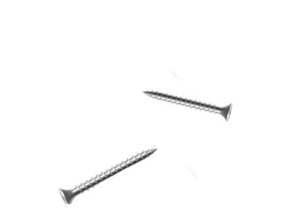
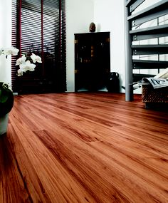
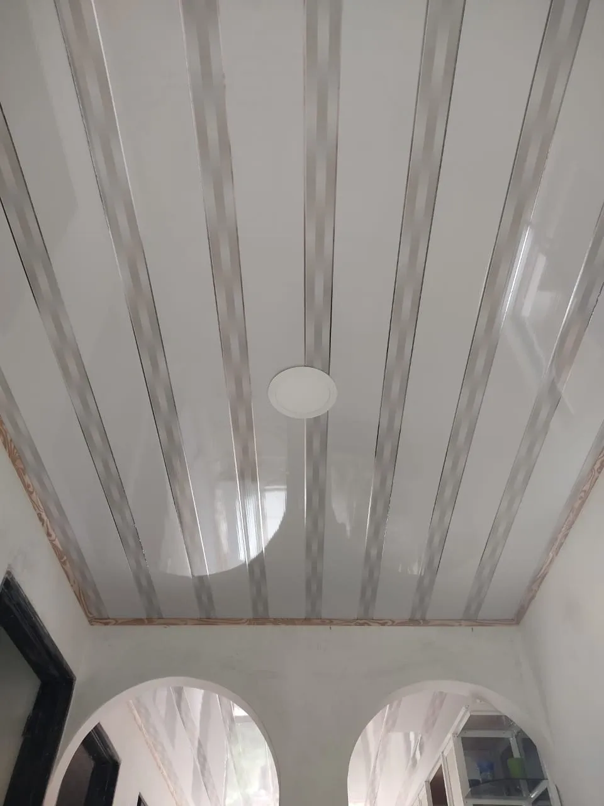

Productos destacados
En Ceramicentro contamos con gran variedad de productos, pero hay algunos los cuales se merecen un apartado especial...

Baldosa castillo
Ceramica moderna con estilo rustico, perfecto para construcciones con diseños antiguos o lugares donde quieras apreciar un poco de elegancia...

Enchape espacato
Ceramica moderna con estilo clasico, perfecto para construcciones con diseños simples pero elegantes...

Piso madera
Pisos tipo madera, perfecto para lugares elegantes o campestres ya que da la apariencia de ser madera real...

Techo
Techo tipo PVC color gis-blanco, es perfecto si quieres interiores iluminados y con un diseño hermoso en olas...